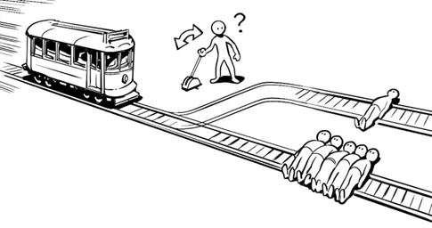

Ethical
Dilemma
Dilemma


The train will head towards the track with five people tied up,
You can change its direction,
Let it drive toward the rails with only one person tied.
You will choose
You can change its direction,
Let it drive toward the rails with only one person tied.
You will choose

Is that one person’s life more valuable than five people’s lives?
Interesting choice,
Your choice is more moralistic
The criterion for moralism to judge whether a behavior is correct or not lies in whether it conforms to the existing system, law or rule. In this way of thinking, the morality of the behavior is fixed and has nothing to do with the situation.
This is a rule-based moral thinking.
Most current public opinion agrees that it is a moral obligation not to kill, so we should not take the lives of others.
Life cannot be judged by quantity,
Let us see if you will stick to your choice.
Interesting choice,
Your choice is more moralistic
The criterion for moralism to judge whether a behavior is correct or not lies in whether it conforms to the existing system, law or rule. In this way of thinking, the morality of the behavior is fixed and has nothing to do with the situation.
This is a rule-based moral thinking.
Most current public opinion agrees that it is a moral obligation not to kill, so we should not take the lives of others.
Life cannot be judged by quantity,
Let us see if you will stick to your choice.